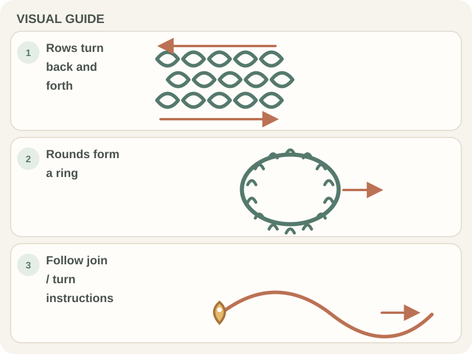

Stitches & Techniques · Beginner guide
How to Crochet in Rows vs. Rounds
Rows turn back and forth; rounds continue around the work to make a tube or circular fabric.

The construction changes how you turn, join, count, and see the fabric. A scarf is often worked in rows, while a hat may use rounds, but the pattern decides the method.
Before you begin
Look at the pattern’s first few instructions and identify whether it says to turn, join, or continue in a spiral. Keep a marker and a row counter nearby if helpful.
Step-by-step instructions
- If the instructions say to turn, complete the row and rotate the fabric as directed.
- If they say to join, make the round-ending join at the named stitch or space.
- If they say to continue in a spiral, work into the next stitch without joining.
- Mark the row or round start and count stitches at the point the pattern specifies.

How to check your work
Rows usually show turning edges; joined rounds show a seam, while spirals have no join at each round. Compare your work with the pattern’s construction notes before continuing.
Common beginner problems
- A seam appears unexpectedly: You may be joining rounds that should be worked in a spiral; reread the round ending.
- The fabric twists: Check that you are not twisting the starting chain before joining it into a ring.
- The row edges slope: Follow the stated turning-chain and edge-stitch instructions; count every row.
Choosing the construction
Rows are useful for flat pieces worked back and forth. Rounds can build circular shapes or tubes; patterns may join each round or use a spiral. Construction is not determined by project name alone—follow the written instructions.
Frequently asked questions
Do all round patterns join at the end?
No. Some join each round; others continue in a spiral.
Do I turn after every round?
Only when the pattern instructs you to turn.
Can the same stitch look different in rows and rounds?
Yes. The fabric’s direction, right side, and seam placement can change the appearance.